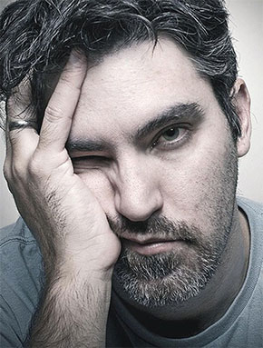

<section class="section fears">
    <div class="section-wrapper">
    <h2 class="section__title fears__title">Что, если вы так и не решитесь на изменения в карьере…</h2>
    <div class="fears-img-block"> 
        <div class="fears-img-block_underlay"></div>
        
    </div>
    <div class="fears__post">
    <p class="fears__post-desc">Будете и дальше ныть, что <span class="text-bold">денег не хватает</span>
        , всю жизнь ходить на
        <span class="text-bold">нелюбимую работу</span>, завидовать друзьям с собственными квартирами, машинами, а Айфон, Макбук и
        <span class="text-bold">путешествия за границу</span> так и останутся вашими мечтами…</p>
    <h4 class="fears__post-item-title"> Вы так и не начнете жить по-настоящему!</h4>
    <p class="fears__post-item-desc">И самое страшное – будете всегда недовольны собой</p>
    <div class="hint">
        <p class="hint__conclusion">А может быть по-другому… и вы сейчас в 1 шаге от качественных изменений своей жизни</p>
   </div>
</div>
</div>
</section>